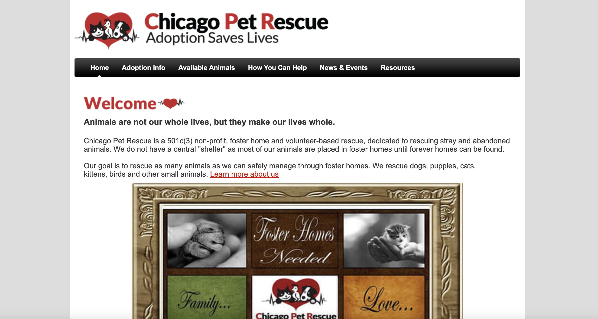

Chicago Pet Rescue is a non-profit, foster home and volunteer-based rescue, dedicated to rescuing stray and abandoned animals. Their goal is to rescue as many animals as they can safely manage through foster homes. They rescue dogs, puppies, cats, kittens, birds and other small animals.
3 Weeks
Research, UX/UI Design, Code
Ashlie, Bea, Valerie
Figma, Figjam, InVision, GitHub, VS Code, Gantt Chart, Canva, PhotoShop, Google Docs, Zoom
With so many animals in need of care and resources, and people looking for company and connection, often animal lovers feel more motivated to adopt a pet instead of purchasing one. When navigating a pet rescue webiste, in order to feel motivated to engage in the adoption process, the user needs to have trust in the organization and feel comfortable and satisfied with the amount of information they find. We identified a gap between what the visitors of the site expected and what the webiste provided. We were able to rethink ways to help the organization’s website serve a bigger purpose and for pet lovers to give back in a manner that provides value to all parties involved.
The Chicago Pet Rescue webiste was cluttered and in need of updating. The site needed to focus on adoption as their main goal and encourage more foot traffic.
To create a streamlined and visually appealing site that clearly explains the adoption process and is easier to navigate. Apply modern UI elements, simplify the application form, and re-organize the navigation to enhance the usability and aesthetics of the Chicago Pet Rescue website while maintaining most of the original site composition and content integrity.